A.1.

This appendix is generated each time it is accessed from the File -> Filter Guide menu item in a Sequitur song window.
The images on this page are in PNG format. If your browser does not display the images correctly, it is probably missing a PNG viewer plugin.
A.1. |
|
Be MIDI Synth |
Type: Output
Maximum connections: 1
Version: 1.1I am a filter for the standard Be-supplied software General MIDI synthesizer. I will only appear if you have a BeOS-compatible soundcard. Once the I have been placed in the output pipeline, you can select from amongst the sixteen MIDI channels by accessing the properties. As a convenience, two- and three- button mice can access the channels through a special right-click popup menu.
This filter uses the factory supplied Be MIDI Synth device. If you wish to change any device properties (such as patch or controller names) for tracks that use the Be MIDI Synth, change that device.
A.2. |
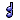 | Chorus |
Type: Through
Maximum connections: 1
Version: 1.0I produce up to four additional notes for every note I receive. The chorused notes can be offset in pitch by octave and/or step amounts, and their velocities can be scaled. Typically, the velocity should be increased for notes lower in pitch and decreased for notes higher in pitch.
A.3. |
Console |
Type: Through
Maximum connections: 1
Version: 1.0I print in the terminal every MIDI event I receive. I am useful for debugging any filters you've written, so you can see the output they are providing. In order for this filter to work, Sequitur must be launched from a command line.
A.4. |
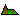 | Controller Envelope |
Type: Through
Maximum connections: 1
Version: 1.1This filter is now obsolete. Use Motion Control, instead.
I convert each note I receive into a series of control changes based on the note velocity -- effectively, I transform a note into a controller sweep. One such application would be to write a single drum part, and 'carve' that part out of a long, evolving sound. Here is how you would achieve that effect:
Create a song with two tracks, both of which have the same MIDI port and channel chosen as their output filter. On the second track, select a sound that will play for any note duration (for example, a flute would work -- a percussion sound like a snare drum would not work, because the sound stops playing shortly after the note is triggered), then place a note down at measure two and continue it for two measures. Keep in mind that you want this track to have a very thick sound. Since you'll be carving pieces out of it, there shouldn't be any quiet time. Layer the voice or even start a new one halfway through the original if necessary.
On the first track, place a Controller Envelope filter as the only filter in the output pipeline (other than the output filter). Now open the first track and place several short notes (start with 16ths) during the two measures that you placed the note on track two. When you play the song, you should only hear track two during the notes you placed in track one.
This filter generates control changes of your choice (the default is volume, control change 7), starting with an initial value (by default zero), and continuing for the attack duration until the start of the note is reached. The final control change of the attack duration will be the same value as the note velocity -- that is, the controllers will sweep down if the initial value is higher than the note velocity, and sweep up if the initial value is lower than the note velocity. The decay duration sweeps the controllers back to the initial value. You can select how many controllers are generated by setting the density value -- lower values will generate more controllers.
While this filter might not seem obvious from the description, you can spend a few moments using it in the edit pipeline to understand how it works.
A.5. |
 |
Controller Limiter |
Type: Through
Maximum connections: 1
Version: 1.0I transform each note I receives into a series of control changes based on my current motion.
Amount
Amount determines the level of the controls generated.
- From velocity uses each note's velocity to determine the amount. For example, if a note has a velocity of 64, then the final generated control changes will range from 0 to 64. If a note has a velocity of 100, then the resulting control changes will range from 0 to 100.
- From value uses the value of the knob (immediately below the From value radio button) to determine the final control change values. If the knob is at 100, then motion values of 100 translate to the maximum possible control change value - 127. If the knob has a negative value, then the motion is inverted.
- Follow mouse uses the mouse's Y position to determine the level.
Motion
The Motion menu button presents a list of all available motions. Selecting one will copy that motion into the filter, making it the current motion. Below this button is a motion editor, which operates the same as the Edit Motion window.Control Number
This list box allows you to select the type of control change that will be created.
A.6. |
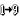 | Controller Map |
Type: Through
Maximum connections: 1
Version: 1.1I am a map of control changes. Every controller can be mapped to a new control value.
A.7. |
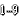 | Controller Range |
Type: Through
Maximum connections: 1
Version: 1.0I am a map of control change ranges. Every controller can be given a new range. For example, if the range is 0 9, then the controller is mapped so that it stays within this range. If the incoming value is 10, it's remapped to 0, 11 to 1, etc.
The intended use for this filter is to map button presses from keyboards to a range suitable for the destination control. For example, if you have a keyboard with a button configured to send values of 0 - 127 on controller 12, you can use a Controller Range to map those values into something useful. Say controller 12 controls the filter type on a synthesizer, and their are 10 types, so the valid range is 0 - 9. This filter will step through the range, always keeping the control value valid.
A.8. |
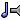 | Copy |
Type: Through
Maximum connections: Unlimited
Version: 1.0I copy all events I receive to all of my outputs.
A.9. |
Dan |
Type: Through
Maximum connections: 1
Version: 1.0I am thoroughly commented template for writing your own C++ filters. The source code can be found in the DevKit/ExampleFilters/ folder.
A.10. |
Dianne |
Type: Through
Maximum connections: 1
Version: 1.1In addition to the Dan filter, I am a template for writing your own C++ filters. The source code can be found in the DevKit/ExampleFilters/ folder.
In previous versions of Sequitur I was the Example filter. For every note I receive, I create a softer note one beat before and one beat after the input note.
A.11. |
Dissolve |
Type: Through
Maximum connections: 1
Version: 1.01 a: to become dissipated or decomposed. 1 b: to fade away.
A.12. |
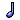 | Duration |
Type: Through
Maximum connections: 1
Version: 1.1I set or modify the duration of all incoming notes.
- Absolute mode sets the duration of all notes to the supplied MIDI ticks.
- Scaled mode modifies the duration of all notes by the supplied scale. At 100%, there will be no change. At 50%, all notes will be halved in length, at 200% they will be doubled.
- From grid sets the duration to the current grid value in the track window. This mode is only valid when the Duration filter is being operated from inside a tool.
A.13. |
Eat Duplicates |
Type: Through
Maximum connections: 1
Version: 1.0This filter deletes the following events:
This filter has no controls.
- Channel pressure events. Any channel pressure events with the same value as the previous channel pressure are deleted.
- Control change events. Any control change events with the same value as the previous control change are deleted.
- Note events. Any overlapping notes are deleted. The note with the highest velocity is retained.
- Pitch bend events. Any pitch bend events with the same value as the previous pitch bend are deleted.
A.14. |
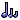 | Echo |
Type: Through
Maximum connections: 2
Version: 2.0I echo note events based on my parameters.
Types
- Traditional. This is a standard echo, where each note is repeated depth number of times.
- Mouse distance. This works only when the filter is in a tool pipeline. Notes are echoed based on the distance the mouse has traveled since being clicked. For example, if a single note is selected, as the mouse is dragged a tail forms that stretches from that note to the mouse location. If multiple notes are selected, they will all have tails that mimic the one attached to the note that was clicked.
- Mouse location. This works only when the filter is in a tool pipeline. Notes are echoed toward the current mouse location. For example, if three notes are selected, then tails will be drawn from those three notes to the current mouse location.
Duration
This is the amount of time between each echo. If you select the "Tools use grid duration" option, then when the Echo filter is used in a tool its duration will come from the current note length of the track window you are working in.Depth
The number of additional notes to generate after the first. In Mouse distance and Mouse location modes, this is the maximum number of additional notes to generate.Velcocity
- Decending Note velocity decreases with time.
- Ascending Note velocity increases with time.
- No Change Note velocity is constant over time.
Start and Stop
These are the relative locations in the echo curve, ranging from 1.0 to 0.0, through which to spread note velocities. For the full curve, start is 1.0 and stop is 0.0; for a reversed curve, start is 0.0 and stop is 1.0.Curve
- Exponential. Linear curve raised to the Exponent power.
- Geometric. Velocity is halved at each step.
- Sinusoidal. Sin curve repeated Period times raised to the Exponent power.
- Sinusoidal Decay. Sin curve repeated Period times with linear modifier, raised to the Exponent power.
- Random. Random curve raised to the Exponent power.
- Random Decay. Random curve with linear modifier, raised to the Exponent power.
Exponent
This is a modifier for all curves, raising the final value (ranging from 0.0 to 1.0) to this exponent's power. A value of 1.0 here is a linear curve. A value greater than 1.0 creates a faster curve (it drops from 1.0 more quickly), while a value less than 1.0 creates a slower curve.Period
For a sinusoidal curve, this is the number of iterations of the sin functions to include in the curve. A value of 1.0 creates a single sin iteration, going from 1.0 down to 0.0 and back up to 1.0.Connections
This filter can have either one or two connections. If it has a single connection, then all events it receives and generates are sent out that connection. If it has two connections, then all events it receives are sent out the first connection, and all events it generates are sent out the second.
A.15. |
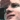 | Eric |
Type: Through
Maximum connections: 1
Version: 1.0I am a template for writing your own C++ filters. The source code can be found in the DevKit/ExampleFilters/ folder.
A.16. |
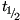 | Erode |
Type: Through
Maximum connections: 1
Version: 1.0Successive notes placed at half duration.
A.17. |
Tool Input |
Type: Tool Input
Maximum connections: 1
Version: 1.0A source for the pipeline page of the Edit Tool and Edit Multi Filter windows.
The Edit Tool window can have any number of Tool Input filters (although only one per pipeline). Each filter corresponds to one of the active tracks. For example, the first Tool Input filter in the tool corresponds to the primary track, the second corresponds to the second ordered track (if any), etc.
The Edit Multi Filter window can only have a single Tool Input filter. All previous filters in the pipeline with the multi filter send their output to this Tool Input filter.
A.18. |
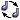 | Inverse |
Type: Through
Maximum connections: 1
Version: 1.0This filter inverts the pitches of all notes.
A.19. |
Keyboard Splitter |
Type: Through
Maximum connections: 2
Version: 1.0All notes above the split point continue down my pipeline. Notes below the split point are sent to my connection, if any
A.20. |
Merge |
Type: Through
Maximum connections: 1
Version: 1.0I am a simple passthrough. I merge together input from multiple sources.
A.21. |
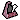 | Metronome |
Type: Through
Maximum connections: 1
Version: 1.1I am used to generate click events. I am most appropriate in the output pipeline. The output filter for the track I reside in determines which of your instruments will perform the click. Controls allow you to set the note value and velocity for several different types of clicks. By default, the metronome will only click while the song is recording; however, unchecking the On only while recording box will allow it to click during playback, as well.
A.22. |
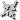 | Monophobic |
Type: Tool Through
Maximum connections: 1
Version: 1.0I am only available in a tool pipeline. I cause all selected note events to follow the mouse as it is dragged up and down.
A.23. |
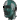 | Motion Control |
Type: Through
Maximum connections: 1
Version: 1.0I transform each note I receives into a series of control changes based on my current motion.
Amount
Amount determines the level of the controls generated.
- From velocity uses each note's velocity to determine the amount. For example, if a note has a velocity of 64, then the final generated control changes will range from 0 to 64. If a note has a velocity of 100, then the resulting control changes will range from 0 to 100.
- From value uses the value of the knob (immediately below the From value radio button) to determine the final control change values. If the knob is at 100, then motion values of 100 translate to the maximum possible control change value - 127. If the knob has a negative value, then the motion is inverted.
- Follow mouse uses the mouse's Y position to determine the level.
Motion
The Motion menu button presents a list of all available motions. Selecting one will copy that motion into the filter, making it the current motion. Below this button is a motion editor, which operates the same as the Edit Motion window.Control Number
This list box allows you to select the type of control change that will be created.
A.24. |
Motion Splitter |
Type: Through
Maximum connections: 2
Version: 1.0I send all events either down my pipeline or to my connection, if any. The Split point controls where to send events: All events on or above the split point continue down my pipeline, all events below it are sent to my connection. The split point corresponds to the possible values of the motion, ranging from -100 to 100.
Amount
This control modifies the motion curve, acting as an offset to the split point. When the Amount: value is at 100%, the split point directly corresponds to the current motion. As the amount increases, the split point effectively decreases.
If Tools follow Y is on, then when this filter is used from a tool, the amount will be set according to the distance the mouse has traveled up or down from the point at which it was pressed. Tools follow X adds an addition dimension, with the amount dropping off towards either end of the selected events.
Frequency
This control determines how often the filter is applied. With a Frequency of 0%, this filter is bypassed. With a Frequency of 100% this filter operates on every event it receives. When between those values, this filter will operate on each event based on the selected Frequency.Motion Selection
The Use Motion button presents a list of all the installed motions and lets you select one, copying the selection into the filter and making it the active motion. If Use motion from track is on, then the filter's current motion is ignored, and whatever motion is active in the track for the events being processed is used.
A.25. |
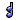 | MultiChorus |
Type: Multi Through
Maximum connections: 1
Version: 1.0
Type: Multi Through.
A.26. |
Note |
Type: Through
Maximum connections: 1
Version: 1.0I perform no processing on events. I am merely a place to store some text.
A.27. |
 |
On Key |
Type: Through
Maximum connections: 2
Version: 1.1I take all incoming notes and makes them conform to a desired key. You can choose from several predefined scales or make your own. Incoming notes that aren't in the selected scale can either be discarded -- they are never heard from again -- shifted down to the next note that is in the scale, shifted up, or shifted up or down, depending upon which shift is closest.
This filter can have either one or two connections. If I have two connections and I am in Discard mode, then all discarded events are sent to the second connection.
A.28. |
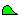 | Oscillator |
Type: Through
Maximum connections: 1
Version: 1.0This filter time stretches all selected events. Tool only.
A.29. |
Tool Output |
Type: Tool Output
Maximum connections: 1
Version: 1.0A target for the pipeline page of the Edit Tool and Edit Multi Filter windows.
The Edit Tool window can have any number of Tool Output filters (although only one per pipeline). Each filter corresponds to one of the active tracks. For example, the first Tool Output filter in the tool corresponds to the primary track, the second corresponds to the second ordered track (if any), etc.
The Edit Multi Filter window can also have any number of Tool Output filters, again at most one per pipeline. The number of Tool Output filters determines the maximum connections the multi filter can have, and each Tool Output filter corresponds with any connection filters, in order.
A.30. |
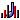 | Pandemic |
Type: Through
Maximum connections: 1
Version: 1.0I generate random control changes with each note I receive. By default, I generate a single random pan value between 0 and 127. The range can be constrained by setting the min value and max value properties. If the duration is greater than one, a series of control changes will be generated, that sweep from the previously generated value to the new random value. The density control sets how many controllers are generated during the sweep -- lower values generate more controllers.
A.31. |
 |
Particle Decay |
Type: Through
Maximum connections: 1
Version: 1.0Successive notes asymptotically approach zero. Simulates radioactive beta decay.
A.32. |
 |
Pink Noise |
Type: Through
Maximum connections: 1
Version: 1.0Successive notes constrained to Voss-McCartney 1/f fractal algorithm.
A.33. |
Quantize |
Type: Through
Maximum connections: 1
Version: 1.3I snap event times to a grid. If the Tools use grid option is active, then I will use the grid from the current track window (this option is only valid if I am being run from a tool). Otherwise, I snap events to the grid specified by my duration control.
If Quantize start time is checked, then I align the start of all events to the grid. If Quantize end time is active, then I align the end of all events to the grid.
A.34. |
ReMote to Q |
Type: Multi Through
Maximum connections: 1
Version: 1.0
Type: Multi Through.
A.35. |
Reverse |
Type: Through
Maximum connections: 1
Version: 1.0This filter time-reverses all events.
A.36. |
Rubber Stamp |
Type: Tool Through
Maximum connections: 1
Version: 0.1I transform events into control changes based on my motion. This is a prerelease version of this filter.
A.37. |
Selective |
Type: Through
Maximum connections: 2
Version: 1.0I allow through only the selected event types, diverting all other events to my second connection (if any). By default, all event types are selected, allowing everything through.
Most events have a checkbox for simple allow / don't allow behaviour. For control change events, you can choose the specific controller number to allow.
A.38. |
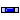 | Short Shift |
Type: Through
Maximum connections: 1
Version: 1.0I offset the start and end times of each event I receive. The Start shift parameter increases the start time by the given value. If the Negative box is checked, the start time decreases. If the Use tool grid box is checked, then the Shift: time specified is ignored, and the current grid is used.
The End parameters work the same, but affect the end time of each event. To retain the same note duration, the End shift and End negative values should be identical to the Start shift and Start negative values.
A.39. |
Softly Off Key |
Type: Multi Through
Maximum connections: 1
Version: 1.0
Type: Multi Through.I play all notes in key normally, but play notes out of key softly.
A.40. |
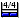 | Til The End |
Type: Through
Maximum connections: 2
Version: 1.0I am a form of echo that uses measure information for my stop condition. When I am in fill mode, I will fill depth number of measures with the current event. When I am in copy mode, I place a single copy of the event in depth number of measures.
If I have a single connection, all events go to that connection. However, if I have two connections the original event will go out the first connection, and all new events will go out the second.
The Grid is only active in Fill mode. It determines the grid on which each note is aligned.
A.41. |
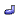 | TimeStretch |
Type: Through
Maximum connections: 1
Version: 1.0This filter time stretches all selected events. Tool only.
A.42. |
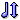 | Transpose |
Type: Through
Maximum connections: 1
Version: 1.0I shift notes up or down in pitch. You can control the shift in octaves or steps.
A.43. |
Uncertain Chorus |
Type: Through
Maximum connections: 1
Version: 1.0I create a random chorus for each note I receives. If I am in an input or output pipeline, I create a random note based on my Frequency. If I am in a tool pipeline, I follow the mouse, and create random notes between where the mouse was pressed and its current Y position.
A.44. |
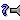 | Uncertain Shuttle |
Type: Through
Maximum connections: Unlimited
Version: 1.0For every event I receive, I randomly choose one of my connections and send the event to it. I can have any number of connections.
A.45. |
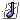 | Unquantize |
Type: Through
Maximum connections: 1
Version: 1.0Typically, MIDI performances have computer-perfect timing. Unquantizing is a process that slightly alters the time of MIDI events in order to create a sloppy, more human feel. The Amount parameter of this filter determines the maximum number of ticks that a single event can be offset, by randomly generating a value between zero and the Amount and applying that to each event.
Randomly quantizing a performance makes it less mechanical, but generally not any more human, since human players tend to have patterns in their imperfections. If the Drifting parameter is on, this filter uses the Recovery value and Step value together to simulate a human player drifting on and off the beat. The Recovery is the maximum number of ticks it takes the performer to return to the correct time, the Steps are the number of ticks in each step on the return. This filter is used heavily in the file Examples/DianneHackborn - Bells.mid
A.46. |
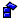 | Unstack |
Type: Through
Maximum connections: 1
Version: 1.0I thin out stacks of notes, where a stack is a series of notes at the same start time. The Frequency control determines how many notes from a stack I remove. If this value is at Never, I do not remove any notes. If it is at Always, I remove every note in every stack. The Threshold control determines how many notes must start at the same time before I consider them a stack. The default threshold is 1, meaning that any group of two or more notes occurring at the same time is a stack.
The Shift parameters are an optional time shift I can apply to the notes, which is another way to thin them. These parameters will only work if the On checkbox is checked.
The Start shift parameter increases the start time of each note in a stack by the given value, resulting in a staircase effect for groups of notes. If the Negative box is checked, the start time decreases. If the Use tool grid box is checked, then the Shift: time specified is ignored, and the current grid is used.
A.47. |
 |
MIDI In |
Type: Input
Maximum connections: 1
Version: 1.0I correspond to a single BeOS MIDI producer. The most common type of MIDI producer is a hardware MIDI port installed on your system, although any application that generates MIDI data can publish a MIDI producer. Any MIDI In filter that is a result of an application will appear and disappear as the application is opened and closed. A BeOS MIDI producer can supply its own icon (software synthesizers frequently do), although any that don't will receive the standard icon with a unique colour.
These filters can only be placed in the first slot of the input pipeline. Once the filter is in the pipeline, you can change its MIDI channel by clicking anywhere on the icon and selecting a new channel from the popup menu. Alternatively, you can open the properties window for the filter and change the channel there. The properties window also allows you to turn off MIDI event types, which prevents them from appearing in a track.
There are a variety of ways to add MIDI ports to your system: Some soundcards have supported MIDI ports, or drivers have been published for several popular USB-based MIDI interfaces (such as the Yamaha UX256).
A.48. |
 |
MIDI Out |
Type: Output
Maximum connections: 1
Version: 1.1I correspond to a single BeOS MIDI consumer. The most common type of MIDI consumer is a hardware MIDI port installed on your system, although any application that receives MIDI data can publish a MIDI consumer. Any MIDI Out filter that is a result of an application will appear and disappear as the application is opened and closed. A BeOS MIDI consumer can supply its own icon (software synthesizers frequently do), although any that don't will receive the standard icon with a unique colour.
These filters can only be placed in the last slot of the output pipeline. Once the filter is in the pipeline, you can change its MIDI channel by clicking anywhere on the icon and selecting a new channel from the popup menu. Alternatively, you can open the properties window for the filter and change the channel there.
The properties window allows you to turn off MIDI event types, which prevents them from being performed. Additionally, the Send MIDI Clock checkbox, when on, will send MIDI clock signals to the MIDI consumer. This can be used for any MIDI device which syncs to MIDI clock. For example, many devices with an arpeggiator can sync to MIDI clock so the sequencer's tempo controllers the tempo of the arpeggiation. Note that you only need to turn this option on for a single channel of a single MIDI consumer.
There are a variety of ways to add MIDI ports to your system: Some soundcards have supported MIDI ports, or drivers have been published for several popular USB-based MIDI interfaces (such as the Yamaha UX256).
A.49. |
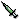 | Vaccine |
Type: Through
Maximum connections: 1
Version: 1.0I alter the value of various event properties based on my motion. For each event I receive, I check where it falls on the motion, then alter it accordingly. The property that is altered depends on the event:
- Control changes: control value
- Pitch bends: pitch value
- Tempo changes: tempo value
- Channel pressure: pressure value
- Notes: the velocity and/or pitch, depending on which box is checked
Amount
Amount determines how much the current motion value affects the value. When the Amount: value is at 100%, then the final value will exactly match the current motion value. For example, if a control change being processed occurs at a motion hit that is at 50%, then the CC's value will be increased by a total of 50% of the value range, which is 64.
Tools follow Y is only meaningful when this filter is being used from a tool. It causes the Amount value to be set by how far the mouse has traveled from the original point. If the mouse travels below the original point, the motion becomes inverted.
Tools follow X causes the Amount to taper off towards either end of the selected events.
Invert X is only valid if Tools follow X is on. It inverts the tapering effect, essentially turning it from a cone to a bowl.
Frequency
This parameter determines how frequently events will be processed. When set to 0% (Never) this filter is effectively bypassed. When set to 100% (Always) every event is processed.
Motion Selection
The Use Motion button presents a list of all the motions currently installed in the system. Selecting one will copy it into the motion editor at the bottom of the window.
If Use motion from track is on, then my motion is ignored. Instead, I use whatever the current track motion is active for each event being processed. If no track motion is set, then nothing happens.
A.50. |
VelociTease |
Type: Through
Maximum connections: 1
Version: 1.1I alter the velocity of all incoming notes. The change I make depends on my current mode.
- Set to will set all velocities to the specified value.
- Scaled will scale all velocities. For example, a scale of 50 will halve the velocities; 200 will double them. A value of 100 will have no effect.
- Change by will change the velocities by the given delta. For example, if the delta is 10, then a note with velocity 100 will be changed to 110. If the delta is -10, then the same note will be 90. A value of 0 will have no effect.
- Random will assign a random velocity to each note.
A.51. |
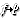 | Velocity Map |
Type: Through
Maximum connections: 1
Version: 1.0I take a range of velocities and transform it into a new range. Any velocities out of range are ignored (so use multiple maps to get multiple bands of transformation). I can be used to compress (by setting the To values to a wider range than the From values) or expand (by doing the opposite).
A.52. |
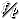 | Velocity Splitter |
Type: Through
Maximum connections: 2
Version: 1.0All notes above the split point continue down my pipeline. Notes below the split point are sent to my connection, if any.
A.53. |
Wipe Out |
Type: Through
Maximum connections: 1
Version: 1.0I delete events that are at their minimum values, as defined by each event, below. The Amount: control can cause events to change by the given amount. If Amount: is set to -100%, I automatically delete all events I receive. The Amount: controls the following values:
- Notes change by velocity.
- Control changes change by control value.
- Pitch bend events change by pitch.
- Any other events are deleted.